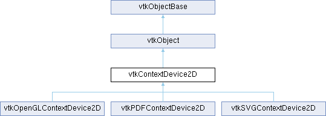

|
Etrek
|
|
Etrek
|
Abstract class for drawing 2D primitives. More...
#include <vtkContextDevice2D.h>

Public Types | |
| enum | TextureProperty { Nearest = 0x01 , Linear = 0x02 , Stretch = 0x04 , Repeat = 0x08 } |
Public Member Functions | |
| vtkTypeMacro (vtkContextDevice2D, vtkObject) | |
| void | PrintSelf (ostream &os, vtkIndent indent) override |
| virtual void | DrawPoly (float *points, int n, unsigned char *colors=nullptr, int nc_comps=0)=0 |
| virtual void | DrawLines (float *f, int n, unsigned char *colors=nullptr, int nc_comps=0)=0 |
| virtual void | DrawPoints (float *points, int n, unsigned char *colors=nullptr, int nc_comps=0)=0 |
| virtual void | DrawPoints (vtkDataArray *positions, vtkUnsignedCharArray *colors, std::uintptr_t vtkNotUsed(cacheIdentifier)) |
| virtual void | DrawPointSprites (vtkImageData *sprite, float *points, int n, unsigned char *colors=nullptr, int nc_comps=0)=0 |
| virtual void | DrawPointSprites (vtkImageData *sprite, vtkDataArray *positions, vtkUnsignedCharArray *colors, std::uintptr_t vtkNotUsed(cacheIdentifier)) |
| virtual void | DrawMarkers (int shape, bool highlight, float *points, int n, unsigned char *colors=nullptr, int nc_comps=0) |
| virtual void | DrawMarkers (int shape, bool highlight, vtkDataArray *positions, vtkUnsignedCharArray *colors, std::uintptr_t vtkNotUsed(cacheIdentifier)) |
| virtual void | DrawQuad (float *, int) |
| virtual void | DrawQuadStrip (float *, int) |
| virtual void | DrawEllipseWedge (float x, float y, float outRx, float outRy, float inRx, float inRy, float startAngle, float stopAngle)=0 |
| virtual void | DrawEllipticArc (float x, float y, float rX, float rY, float startAngle, float stopAngle)=0 |
| virtual void | DrawString (float *point, const vtkStdString &string)=0 |
| virtual void | ComputeStringBounds (const vtkStdString &string, float bounds[4])=0 |
| virtual void | ComputeJustifiedStringBounds (const char *string, float bounds[4])=0 |
| virtual void | DrawMathTextString (float *point, const vtkStdString &string)=0 |
| virtual bool | MathTextIsSupported () |
| virtual void | DrawImage (float p[2], float scale, vtkImageData *image)=0 |
| virtual void | DrawImage (const vtkRectf &pos, vtkImageData *image)=0 |
| virtual void | DrawPolyData (float p[2], float scale, vtkPolyData *polyData, vtkUnsignedCharArray *colors, int scalarMode) |
| virtual void | ApplyPen (vtkPen *pen) |
| virtual void | ApplyBrush (vtkBrush *brush) |
| virtual void | ApplyTextProp (vtkTextProperty *prop) |
| virtual void | SetColor4 (unsigned char color[4])=0 |
| virtual void | SetTexture (vtkImageData *image, int properties)=0 |
| virtual void | SetPointSize (float size)=0 |
| virtual void | SetLineWidth (float width)=0 |
| virtual void | SetLineType (int type)=0 |
| virtual int | GetWidth () |
| virtual int | GetHeight () |
| virtual void | SetMatrix (vtkMatrix3x3 *m)=0 |
| virtual void | GetMatrix (vtkMatrix3x3 *m)=0 |
| virtual void | MultiplyMatrix (vtkMatrix3x3 *m)=0 |
| virtual void | PushMatrix ()=0 |
| virtual void | PopMatrix ()=0 |
| virtual void | SetClipping (int *x)=0 |
| virtual void | DisableClipping () |
| virtual void | EnableClipping (bool enable)=0 |
| virtual void | Begin (vtkViewport *) |
| virtual void | End () |
| virtual bool | GetBufferIdMode () const |
| virtual void | BufferIdModeBegin (vtkAbstractContextBufferId *bufferId) |
| virtual void | BufferIdModeEnd () |
| virtual void | SetViewportSize (const vtkVector2i &size) |
| vtkGetMacro (ViewportSize, vtkVector2i) | |
| virtual void | SetViewportRect (const vtkRecti &rect) |
| vtkGetMacro (ViewportRect, vtkRecti) | |
| virtual void | ReleaseCache (std::uintptr_t vtkNotUsed(cacheIdentifier)) |
| virtual void | DrawPolygon (float *p, int n) |
| virtual void | DrawColoredPolygon (float *points, int numPoints, unsigned char *colors=nullptr, int nc_comps=0) |
| vtkGetObjectMacro (Pen, vtkPen) | |
| vtkGetObjectMacro (Brush, vtkBrush) | |
| vtkGetObjectMacro (TextProp, vtkTextProperty) | |
| Public Member Functions inherited from vtkObject | |
| vtkBaseTypeMacro (vtkObject, vtkObjectBase) | |
| virtual void | DebugOn () |
| virtual void | DebugOff () |
| bool | GetDebug () |
| void | SetDebug (bool debugFlag) |
| virtual void | Modified () |
| virtual vtkMTimeType | GetMTime () |
| void | PrintSelf (ostream &os, vtkIndent indent) override |
| void | RemoveObserver (unsigned long tag) |
| void | RemoveObservers (unsigned long event) |
| void | RemoveObservers (const char *event) |
| void | RemoveAllObservers () |
| vtkTypeBool | HasObserver (unsigned long event) |
| vtkTypeBool | HasObserver (const char *event) |
| vtkTypeBool | InvokeEvent (unsigned long event) |
| vtkTypeBool | InvokeEvent (const char *event) |
| std::string | GetObjectDescription () const override |
| unsigned long | AddObserver (unsigned long event, vtkCommand *, float priority=0.0f) |
| unsigned long | AddObserver (const char *event, vtkCommand *, float priority=0.0f) |
| vtkCommand * | GetCommand (unsigned long tag) |
| void | RemoveObserver (vtkCommand *) |
| void | RemoveObservers (unsigned long event, vtkCommand *) |
| void | RemoveObservers (const char *event, vtkCommand *) |
| vtkTypeBool | HasObserver (unsigned long event, vtkCommand *) |
| vtkTypeBool | HasObserver (const char *event, vtkCommand *) |
| template<class U, class T> | |
| unsigned long | AddObserver (unsigned long event, U observer, void(T::*callback)(), float priority=0.0f) |
| template<class U, class T> | |
| unsigned long | AddObserver (unsigned long event, U observer, void(T::*callback)(vtkObject *, unsigned long, void *), float priority=0.0f) |
| template<class U, class T> | |
| unsigned long | AddObserver (unsigned long event, U observer, bool(T::*callback)(vtkObject *, unsigned long, void *), float priority=0.0f) |
| vtkTypeBool | InvokeEvent (unsigned long event, void *callData) |
| vtkTypeBool | InvokeEvent (const char *event, void *callData) |
| virtual void | SetObjectName (const std::string &objectName) |
| virtual std::string | GetObjectName () const |
| Public Member Functions inherited from vtkObjectBase | |
| const char * | GetClassName () const |
| virtual vtkTypeBool | IsA (const char *name) |
| virtual vtkIdType | GetNumberOfGenerationsFromBase (const char *name) |
| virtual void | Delete () |
| virtual void | FastDelete () |
| void | InitializeObjectBase () |
| void | Print (ostream &os) |
| void | Register (vtkObjectBase *o) |
| virtual void | UnRegister (vtkObjectBase *o) |
| int | GetReferenceCount () |
| void | SetReferenceCount (int) |
| bool | GetIsInMemkind () const |
| virtual void | PrintHeader (ostream &os, vtkIndent indent) |
| virtual void | PrintTrailer (ostream &os, vtkIndent indent) |
| virtual bool | UsesGarbageCollector () const |
Static Public Member Functions | |
| static vtkContextDevice2D * | New () |
| Static Public Member Functions inherited from vtkObject | |
| static vtkObject * | New () |
| static void | BreakOnError () |
| static void | SetGlobalWarningDisplay (vtkTypeBool val) |
| static void | GlobalWarningDisplayOn () |
| static void | GlobalWarningDisplayOff () |
| static vtkTypeBool | GetGlobalWarningDisplay () |
| Static Public Member Functions inherited from vtkObjectBase | |
| static vtkTypeBool | IsTypeOf (const char *name) |
| static vtkIdType | GetNumberOfGenerationsFromBaseType (const char *name) |
| static vtkObjectBase * | New () |
| static void | SetMemkindDirectory (const char *directoryname) |
| static bool | GetUsingMemkind () |
Protected Attributes | |
| int | Geometry [2] |
| vtkVector2i | ViewportSize |
| vtkRecti | ViewportRect |
| vtkAbstractContextBufferId * | BufferId |
| vtkPen * | Pen |
| vtkBrush * | Brush |
| vtkTextProperty * | TextProp |
| Protected Attributes inherited from vtkObject | |
| bool | Debug |
| vtkTimeStamp | MTime |
| vtkSubjectHelper * | SubjectHelper |
| std::string | ObjectName |
| Protected Attributes inherited from vtkObjectBase | |
| std::atomic< int32_t > | ReferenceCount |
| vtkWeakPointerBase ** | WeakPointers |
Additional Inherited Members | |
| Protected Member Functions inherited from vtkObject | |
| void | RegisterInternal (vtkObjectBase *, vtkTypeBool check) override |
| void | UnRegisterInternal (vtkObjectBase *, vtkTypeBool check) override |
| void | InternalGrabFocus (vtkCommand *mouseEvents, vtkCommand *keypressEvents=nullptr) |
| void | InternalReleaseFocus () |
| Protected Member Functions inherited from vtkObjectBase | |
| virtual void | ReportReferences (vtkGarbageCollector *) |
| vtkObjectBase (const vtkObjectBase &) | |
| void | operator= (const vtkObjectBase &) |
| Static Protected Member Functions inherited from vtkObjectBase | |
| static vtkMallocingFunction | GetCurrentMallocFunction () |
| static vtkReallocingFunction | GetCurrentReallocFunction () |
| static vtkFreeingFunction | GetCurrentFreeFunction () |
| static vtkFreeingFunction | GetAlternateFreeFunction () |
Abstract class for drawing 2D primitives.
This defines the interface for a vtkContextDevice2D. In this sense a ContextDevice is a class used to paint 2D primitives onto a device, such as an OpenGL context or a QGraphicsView.
|
virtual |
Apply the supplied brush which controls the outlines of shapes, as well as lines, points and related primitives. This makes a deep copy of the vtkBrush object in the vtkContext2D, it does not hold a pointer to the supplied object.
|
virtual |
Apply the supplied pen which controls the outlines of shapes, as well as lines, points and related primitives. This makes a deep copy of the vtkPen object in the vtkContext2D, it does not hold a pointer to the supplied object.
|
virtual |
Apply the supplied text property which controls how text is rendered. This makes a deep copy of the vtkTextProperty object in the vtkContext2D, it does not hold a pointer to the supplied object.
|
inlinevirtual |
Begin drawing, pass in the viewport to set up the view.
Reimplemented in vtkOpenGLContextDevice2D, and vtkSVGContextDevice2D.
|
virtual |
Start BufferId creation Mode. The default implementation is empty.
Reimplemented in vtkOpenGLContextDevice2D.
|
virtual |
Finalize BufferId creation Mode. It makes sure that the content of the bufferId passed in argument of BufferIdModeBegin() is correctly set. The default implementation is empty.
Reimplemented in vtkOpenGLContextDevice2D.
|
pure virtual |
Compute the bounds of the supplied string while taking into account the justification of the currently applied text property. Simple rotations (0, 90, 180, 270) are also correctly taken into account.
Implemented in vtkOpenGLContextDevice2D, vtkPDFContextDevice2D, and vtkSVGContextDevice2D.
|
pure virtual |
Compute the bounds of the supplied string. The bounds will be copied to the supplied bounds variable, the first two elements are the bottom corner of the string, and the second two elements are the width and height of the bounding box. NOTE: This function does not take account of the text rotation or justification.
Implemented in vtkOpenGLContextDevice2D, vtkPDFContextDevice2D, and vtkSVGContextDevice2D.
|
inlinevirtual |
Disable clipping of the display. Remove in a future release - retained for API compatibility.
|
pure virtual |
Draw an elliptic wedge with center at x, y, outer radii outRx, outRy, inner radii inRx, inRy between angles startAngle and stopAngle (expressed in degrees).
Implemented in vtkOpenGLContextDevice2D, vtkPDFContextDevice2D, and vtkSVGContextDevice2D.
|
pure virtual |
Draw an elliptic arc with center at x,y with radii rX and rY between angles startAngle and stopAngle (expressed in degrees).
Implemented in vtkOpenGLContextDevice2D, vtkPDFContextDevice2D, and vtkSVGContextDevice2D.
|
pure virtual |
Draw the supplied image at the given position. The origin, width, and height are specified by the supplied vtkRectf variable pos. The image will be drawn scaled to that size.
Implemented in vtkOpenGLContextDevice2D, vtkPDFContextDevice2D, and vtkSVGContextDevice2D.
|
pure virtual |
Draw the supplied image at the given x, y (p[0], p[1]) (bottom corner), scaled by scale (1.0 would match the image).
Implemented in vtkOpenGLContextDevice2D, vtkPDFContextDevice2D, and vtkSVGContextDevice2D.
|
pure virtual |
Draw lines using the points - memory layout is as follows: l1p1,l1p2,l2p1,l2p2... The lines will be colored by colors array which has nc_comps components (defining a single color).
Implemented in vtkOpenGLContextDevice2D, vtkPDFContextDevice2D, and vtkSVGContextDevice2D.
|
virtual |
Draw a series of markers centered at the points supplied. The shape argument controls the marker shape, and can be one of
| shape | the shape of the marker |
| highlight | whether to highlight the marker or not |
| points | where to draw the sprites |
| n | the number of points |
| colors | is an optional array of colors. |
| nc_comps | is the number of components for the color. |
Reimplemented in vtkOpenGLContextDevice2D, vtkPDFContextDevice2D, and vtkSVGContextDevice2D.
|
pure virtual |
Draw text using MathText markup for mathematical equations. See http://matplotlib.sourceforge.net/users/mathtext.html for more information.
Implemented in vtkPDFContextDevice2D, and vtkSVGContextDevice2D.
|
pure virtual |
Draw a series of points - fastest code path due to memory layout of the coordinates. The colors and nc_comps are optional - color array.
Implemented in vtkOpenGLContextDevice2D, vtkPDFContextDevice2D, and vtkSVGContextDevice2D.
|
pure virtual |
Draw a series of point sprites, images centred at the points supplied. The supplied vtkImageData is the sprite to be drawn, only squares will be drawn and the size is set using SetPointSize.
| sprite | the image to draw |
| points | where to draw the sprites |
| n | the number of points |
| colors | is an optional array of colors. |
| nc_comps | is the number of components for the color. |
Implemented in vtkOpenGLContextDevice2D, vtkPDFContextDevice2D, and vtkSVGContextDevice2D.
|
pure virtual |
Draw a poly line using the points - fastest code path due to memory layout of the coordinates. The line will be colored by the colors array, which must be have nc_comps components (defining a single color).
Implemented in vtkOpenGLContextDevice2D, vtkPDFContextDevice2D, and vtkSVGContextDevice2D.
|
virtual |
Draw the supplied PolyData at the given x, y (p[0], p[1]) (bottom corner), scaled by scale (1.0 would match the actual dataset).
Only lines and polys are rendered. Only the x/y coordinates of the polydata are used.
| p | Offset to apply to polydata. |
| scale | Isotropic scale for polydata. Applied after offset. |
| polyData | Draw lines and polys from this dataset. |
| colors | RGBA for points or cells, depending on value of scalarMode. Must not be NULL. |
| scalarMode | Must be either VTK_SCALAR_MODE_USE_POINT_DATA or VTK_SCALAR_MODE_USE_CELL_DATA. |
The base implementation breaks the polydata apart and renders each polygon individually using the device API. Subclasses should override this method with a batch-drawing implementation if performance is a concern.
Reimplemented in vtkOpenGLContextDevice2D, and vtkPDFContextDevice2D.
|
inlinevirtual |
Draw a polygon using the specified number of points.
Reimplemented in vtkOpenGLContextDevice2D, vtkPDFContextDevice2D, and vtkSVGContextDevice2D.
|
inlinevirtual |
Draw a quad using the specified number of points.
Reimplemented in vtkOpenGLContextDevice2D, vtkPDFContextDevice2D, and vtkSVGContextDevice2D.
|
inlinevirtual |
Draw a quad using the specified number of points.
Reimplemented in vtkOpenGLContextDevice2D, vtkPDFContextDevice2D, and vtkSVGContextDevice2D.
|
pure virtual |
Draw some text to the screen.
Implemented in vtkOpenGLContextDevice2D, vtkPDFContextDevice2D, and vtkSVGContextDevice2D.
|
pure virtual |
Enable or disable the clipping of the scene.
Implemented in vtkOpenGLContextDevice2D, vtkPDFContextDevice2D, and vtkSVGContextDevice2D.
|
inlinevirtual |
End drawing, clean up the view.
Reimplemented in vtkOpenGLContextDevice2D, and vtkSVGContextDevice2D.
|
virtual |
Tell if the device context is in BufferId creation mode. Initial value is false.
|
inlinevirtual |
Get the width of the device in pixels.
|
pure virtual |
Set the model view matrix for the display
Implemented in vtkOpenGLContextDevice2D, vtkPDFContextDevice2D, and vtkSVGContextDevice2D.
|
inlinevirtual |
Get the width of the device in pixels.
|
virtual |
Return true if MathText rendering available on this device.
|
pure virtual |
Multiply the current model view matrix by the supplied one
Implemented in vtkOpenGLContextDevice2D, vtkPDFContextDevice2D, and vtkSVGContextDevice2D.
|
pure virtual |
Pop the current matrix off of the stack.
Implemented in vtkOpenGLContextDevice2D, vtkPDFContextDevice2D, and vtkSVGContextDevice2D.
|
overridevirtual |
Methods invoked by print to print information about the object including superclasses. Typically not called by the user (use Print() instead) but used in the hierarchical print process to combine the output of several classes.
Reimplemented from vtkObjectBase.
Reimplemented in vtkOpenGLContextDevice2D, vtkPDFContextDevice2D, and vtkSVGContextDevice2D.
|
pure virtual |
Push the current matrix onto the stack.
Implemented in vtkOpenGLContextDevice2D, vtkPDFContextDevice2D, and vtkSVGContextDevice2D.
|
inlinevirtual |
Concrete graphics implementations maintain a cache of heavy-weight buffer objects to achieve higher interactive framerates. This method requests the devices to release the cached objects for a given cache identifier.
|
pure virtual |
Supply an int array of length 4 with x1, y1, width, height specifying clipping region for the device in pixels.
Implemented in vtkOpenGLContextDevice2D, vtkPDFContextDevice2D, and vtkSVGContextDevice2D.
|
pure virtual |
Set the color for the device using unsigned char of length 4, RGBA.
Implemented in vtkOpenGLContextDevice2D, vtkPDFContextDevice2D, and vtkSVGContextDevice2D.
|
pure virtual |
Set the line type type (using anonymous enum in vtkPen).
Implemented in vtkOpenGLContextDevice2D, vtkPDFContextDevice2D, and vtkSVGContextDevice2D.
|
pure virtual |
Set the line width.
Implemented in vtkOpenGLContextDevice2D, vtkPDFContextDevice2D, and vtkSVGContextDevice2D.
|
pure virtual |
Set the model view matrix for the display
Implemented in vtkOpenGLContextDevice2D, vtkPDFContextDevice2D, and vtkSVGContextDevice2D.
|
pure virtual |
Set the point size for glyphs/sprites.
Implemented in vtkOpenGLContextDevice2D, vtkPDFContextDevice2D, and vtkSVGContextDevice2D.
|
pure virtual |
Set the texture for the device, it is used to fill the polygons
Implemented in vtkOpenGLContextDevice2D, vtkPDFContextDevice2D, and vtkSVGContextDevice2D.
| vtkContextDevice2D::vtkGetObjectMacro | ( | Brush | , |
| vtkBrush | ) |
Get the pen which controls the outlines of shapes as well as lines, points and related primitives.
| vtkContextDevice2D::vtkGetObjectMacro | ( | Pen | , |
| vtkPen | ) |
Get the pen which controls the outlines of shapes, as well as lines, points and related primitives. This object can be modified and the changes will be reflected in subsequent drawing operations.
| vtkContextDevice2D::vtkGetObjectMacro | ( | TextProp | , |
| vtkTextProperty | ) |
Get the text properties object for the vtkContext2D.
|
protected |
Store the width and height of the device in pixels.
|
protected |
Store our origin and size in the total viewport.
|
protected |
Store the size of the total viewport.